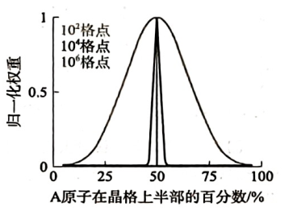
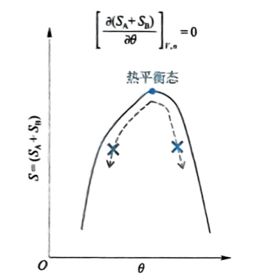
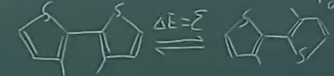

第二章 从单原子分子到多原子：熵与温度
第一节 相互作用研究的局限性
1.1能量图像
\[dq + \underbrace{dW}_{\text{作用}} = \underbrace{dE}_{\text{物体}}\]
多体作用\(\Rightarrow\)势场:
\[\vec{F}_{\text{保守}} = -\frac{\partial E_p}{\partial r}\]
定态薛定谔方程：
\[ \left( -\frac{\hbar^2}{2m}\frac{d^2}{dx^2} + V(x) \right) \psi(x) = E\psi(x) \]
多体作用抽象为势场 (\(V(r)\)) \(\rightarrow\) 代入薛定谔方程求解 \(\rightarrow\) 获得离散的量子化能级 (\(E_n\)) \(\rightarrow\) 构建统计物理配分函数 (\(q\)) \(\rightarrow\) 导出宏观热力学状态函数 (\(U, C_V\)) \(\rightarrow\) 解释宏观体系内能变化 (\(dE\))与能量交换 (\(dq+dW\))
1.2 超多分子系统的特点
\[ \text{始态} \xrightarrow{\text{作用}} \text{终态 (变化)} \]
由能量\(E\)（相互作用），系统转化为最大概率状态，带来熵变，熵\(S\)被定义为系统微观状态多样性。多样性改变的难易度即为温度\(T\)。
第二节 宏观状态的微观多样性：熵
2.1 排列组合
一个 3 行 4 列的晶格，被中间的竖线平分为左右两半，左右各 6 个格位。有Au (8 个)，Ag (4 个)。现观照左侧Ag的比例。
宏观状态 \(i\)
(\(N_{\text{Ag(左)}}\)) |
\(W_i\) |
\(W_i/W_{\max}\) |
| 4 |
\(\frac{6!}{4!2!} \frac{6!}{6!} = 15\) |
0.07 |
| 3 |
\(\frac{6!}{3!3!} \frac{6!}{1!5!} = 120\) |
0.53 |
| 2 |
\(\left(\frac{6!}{4!2!}\right)^2 = 225\) |
1 |
| 1 |
120 |
0.53 |
| 0 |
15 |
0.07 |
2.2 最概然分布与统计涨落
超多分子系统：对微观足够大，宏观足够小~\(10^6\)

(1)最概然分布：宏观上均匀的状态，对应了最多的微观状态数。
(2)统计涨落：宏观测量的偏差，小。
2.3 统计热力学的基本假定
边界条件允许的任何微观状态出现概率相等。
（1）宏观实验时间足够长
（2）时间域复制
对任一宏观状态 \(i\) , 出现概率：
\[
P_i = \frac{W_i}{\sum_{i=1}^n W_i}
\]
\(n\) 是宏观状态的数目
2.4 熵的定义
1840年左右，克劳修斯定义了熵（热温熵）：
\[
dS = \frac{dq_{\text{rev}}}{T}
\]
熵作为状态函数，具广度性质。玻尔兹曼将其定义为系统多样性的量度：
\[
S \equiv k \ln W
\]
k为玻尔兹曼系数
气体常数：
\[
R = N_A·K
\]
① 是某宏观状态的熵
② 对于某平衡态的系统，最概然分布的熵等同于平衡态的熵。
③
$$
\because W_{\text{min}} = 1, \therefore S_{\text{min}} = 0
$$
对应着热力学第三定律的微观统计解释：宏观熵对于等于 0。
2.5 熵增原理（热力学第二定律）
孤立系统：与环境无物质与能量交换的系统
始态 \(\xrightarrow{\text{概率增加}}\) 终态 (\(W_{\text{max}}\))
热力学第二定律：孤立系统内的任一过程一定满足 \(dS \ge 0\)
Note
假设一个极小的宏观熵差：\(\Delta S = 0.0001 \text{ J/K} = 10^{-4} \text{ J/K}\)
\[\Delta S = S_1 - S_2 = k \ln W_1 - k \ln W_2 = k \ln\left(\frac{W_1}{W_2}\right)\]
\[\frac{W_1}{W_2} = e^{\frac{\Delta S}{k}}\]
\[\frac{\Delta S}{k} = \frac{10^{-4}}{1.38 \times 10^{-23}} \approx 0.72 \times 10^{19}\]
\[\frac{W_1}{W_2} \approx e^{10^{20}}\]
对于扩展的大孤立系统 (系统 + 环境)：
\[
\boxed{dS_{\text{孤}} = dS + dS_{\text{环}} \ge 0}
\]
(1)放弃了以做功为唯一相互作用方式
(2) \(dq\) 所致
第三节 熵改变的难易度：温度
3.1 熵改变与能量
对于单一量子自由度而言，\(U\uparrow\) ，能布居的能级数目增加，粒子数不变，\(S\uparrow\)
\[
W = \frac{N!}{\prod_i N_i!}
\]
\[
\left(\frac{\partial S}{\partial U}\right)_{n,V}=\left(\frac{\partial S}{\partial Q}\right)_{n,V} \ge 0
\]
3.2 熵改变难易度
孤立系统中，将 \(A\) 与 \(B\) 两个物块接触。
总熵增加：
\[
dS_A + dS_B \ge 0
\]
同时：
\[
dU_A + dU_B = 0, \quad dU_A = -dU_B < 0
\]
\[
dS_A + dS_B > 0 \quad \text{（两边同除以 } dU_B \text{）}
\]
\[
\frac{dS_A}{dU_B} + \frac{dS_B}{dU_B} > 0
\]
\[
\frac{dS_A}{dU_A} < \frac{dS_B}{dU_B}
\]
\[
\because dS_B > 0, \quad dU_B > 0
\]
\[
dS_A < 0, \quad dU_A < 0
\]
\[
\frac{dU_B}{dS_B} < \frac{dU_A}{dS_A}
\]
改为偏导数
\[
\therefore \left(\frac{\partial U_B}{\partial S_B}\right)_{n,V} < \left(\frac{\partial U_A}{\partial S_A}\right)_{n,V}
\]
定义：
\[T \equiv \left( \frac{\partial U}{\partial S} \right)_{n, V} = \left( \frac{\partial Q}{\partial S} \right)_{n, V}\]
温度是系统一个状态在 \(n, V\) 不变条件下，熵改变的难易度。为强度性质。
3.3 热力学第零定律与热平衡
我们一般测量的是温度的效应，而非温度自身。熵作为多样性，反而最容易观测。
热力学第零定律：
\[A \Leftrightarrow B, \quad T_A = T_B\]
\[B \Leftrightarrow C, \quad T_B = T_C\]
那么，
\[A \Leftrightarrow C, \quad T_A = T_C\]
一个矩形容器被中间的隔板分为左右两个部分，标记为 \(A\) 和 \(B\)。
\[\left( \frac{\partial (S_A + S_B)}{\partial \theta} \right)_{n, V} = 0\]
\(\theta\)为截面两侧热能交换量
\[\left( \frac{\partial S_A}{\partial Q_A} \right)_{n, V} - \left( \frac{\partial S_B}{\partial Q_B} \right)_{n, V} = 0\]
\[d\theta = dQ_A = -dQ_B\]
\[\frac{1}{T_A} - \frac{1}{T_B} = 0\]
熵极大原理与热平衡

将总熵微商表示为对热交换量 \(\theta\) 的导数：
\[\left( \frac{\partial S}{\partial \theta} \right)_{n,V} = \frac{1}{T_A} - \frac{1}{T_B}\]
根据热力学第二定律，孤立系统\(dS > 0\)。若 \(T_A \neq T_B\)，热量会自发从高温区流向低温区，使状态点在曲线上向顶点移动。曲线的最高点，此时系统总熵达到最大。极值点处导数为零：
$$ \left( \frac{\partial S}{\partial \theta} \right)_{n,V} = 0$$
\[ \frac{1}{T_A} - \frac{1}{T_B} = 0 \implies T_A = T_B\]
第四节 玻尔兹曼分布
4.1 分子物质观的统计热力学———量子统计热力学
(1) 分布在量子自由度的各能级
(2) 各量子自由度正交，分子在各自由度的能级上独立分布。
(3) 微观状态数\(W = \prod_j W_j, \quad S = \sum_j S_j\)
4.2 一个只有两个能级的自由度的分布

小系统 + 环境 \(\rightarrow\) 大孤立系统
\[\frac{P(\varepsilon)}{P(0)} = \frac{W(\varepsilon) \cdot W_{\text{环}}(U_{\text{环}} - \varepsilon)}{W(0) \cdot W_{\text{环}}(U_{\text{环}})} = e^{\frac{S_{\text{环}}(U_{\text{环}} - \varepsilon) - S_{\text{环}}(U_{\text{环}})}{k}} = e^{-\frac{\varepsilon}{kT}}\]
Tip
这里不考虑两个能级简并度，即\(W(\varepsilon)\)和\(W(0)\)为一。
其中对环境熵的进行了泰勒展开
\[S_{\text{环}}(U_{\text{环}} - \varepsilon) \approx S_{\text{环}}(U_{\text{环}}) - \left( \frac{\partial S}{\partial U} \right)_{n,V} \varepsilon\]
由 \(\left( \frac{\partial S}{\partial U} \right)_{n,V} = \frac{1}{T}\)：
\[dS_{\text{环}} = S_{\text{环}}(U_{\text{环}} - \varepsilon) - S_{\text{环}}(U_{\text{环}}) = -\frac{\varepsilon}{T}\]
4.3 玻尔兹曼分布
设基态能级的能量 \(\varepsilon = E_0 - E_0 = 0\)。任一能级 \(i\)，\(\varepsilon_i = E_i - E_0\)
任选能级 \(i\) 和 \(0\)，有：
\[\frac{P(i)}{P(0)} = e^{-\frac{\varepsilon_i}{kT}}\]
\[P(i) = \frac{N_i}{\sum_{i=0}^n N_i} = \frac{N_i}{N}\]
\[\because \sum_{i=0}^n P(i) = 1\]
\[\therefore 1 = P(0) \sum_{i=0}^n e^{-\frac{\varepsilon_i}{kT}} \Rightarrow P(0) = \frac{1}{\sum_{i=0}^n e^{-\frac{\varepsilon_i}{kT}}}\]
配分函数：
\[\boxed{\boldsymbol{q} \equiv \sum_{i=0}^n e^{-\frac{\varepsilon_i}{kT}}}\]
Tip
\(q\) 代表了在给定温度 \(T\) 下，系统可以有效热占据的微观状态总数。
(1) 给定量子自由度，温度，\(q\) 有定值
(2) \(T \uparrow\), \(q \uparrow\)
(3) \(T\) 一定，\(\Delta \varepsilon_{1 \to 0} \uparrow\), \(q \downarrow\)
\(q = 1\)即能量最低原理显然需要基于如下假设：
① \(T \to 0\)
② \(\Delta \varepsilon_{1 \to 0} \to \infty\)
\[\frac{\varepsilon}{kT} \to \infty \quad
\begin{cases}
\text{电子跃迁}\Delta \varepsilon_{1 \to 0} = 1000 \text{ meV} \\
\text{室温 } kT = 25 \text{ meV}
\end{cases}\]
第五节 浓度定律
5.1 单相溶液中的分子分布
\[\frac{P_A}{P_B} \equiv \frac{C_A}{C_B} = e^{-\frac{(\varepsilon_A - \varepsilon_B)}{kT}} = 1 \quad (\varepsilon_A = \varepsilon_B)\]
变量定义：
-
\(A\)、\(B\)：代表单相溶液中的任意两个不同位置。
-
\(P_A\)、\(P_B\)：微观上，溶质分子出现在位置 \(A\) 和 \(B\) 的概率。
-
\(C_A\)、\(C_B\)：宏观上，位置 \(A\) 和 \(B\) 的溶质浓度。
-
\(\varepsilon_A\)、\(\varepsilon_B\)：溶质分子在位置 \(A\) 和 \(B\) 的势能。
在热平衡状态下，单相溶液内部各处的溶质分子分布是均匀的，宏观浓度处处相等。 玻尔兹曼分布不仅能处理不同能级间的粒子分布，也能解释空间上的粒子分布。
5.2 离心机
考虑粒子在重力场中从容器底部 (\(h=0\)) 升至高度 \(h\),体系能量包括两部分重力势能相减
\[\varepsilon(h) = (\rho_{\text{质}} - \rho_{\text{剂}}) V_{\text{质}} g h = \Delta \rho V_{\text{质}} g h\]
浓度 \(C\) 正比于粒子出现的概率 \(P\)：
\[\frac{C(h)}{C(0)} = \frac{P(h)}{P(0)} = e^{-\frac{\Delta \rho V_{\text{质}} g h}{kT}}\]
\(V_{\text{质}} \to \infty\)：从微观纳米晶过渡到宏观大尺寸物体，由统计物理得到宏观浮力定律
- 沉降 (\(\Delta \rho > 0\))
固体密度大于溶剂密度，参考点取底部 \(C(0)\)：
\[\lim_{V_{\text{质}} \to \infty} \frac{C(h)}{C(0)} = \lim_{V_{\text{质}} \to \infty} e^{-\frac{\Delta \rho V_{\text{质}} g h}{kT}} = 0\]
\[\lim_{V_{\text{质}} \to \infty} \frac{C(h)}{C(\text{面})} = \lim_{V_{\text{质}} \to \infty} e^{\frac{\Delta \rho V_{\text{质}} g h}{kT}} = 0\]
\[\frac{C(h)}{C(0)} = e^0 = 1\]